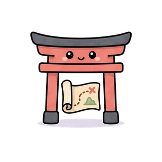
Une carte, des mondes, des combats
Chaque monde enseigne un point précis : une ligne de kana, une particule, une forme verbale.
YokaiGo · Android et iOS
YokaiGo est un jeu d'aventure. On avance de monde en monde sur une carte, on affronte des créatures du folklore japonais, et chaque combat est une série d'exercices. Les cours sont en français, du premier hiragana au niveau N4 du JLPT.
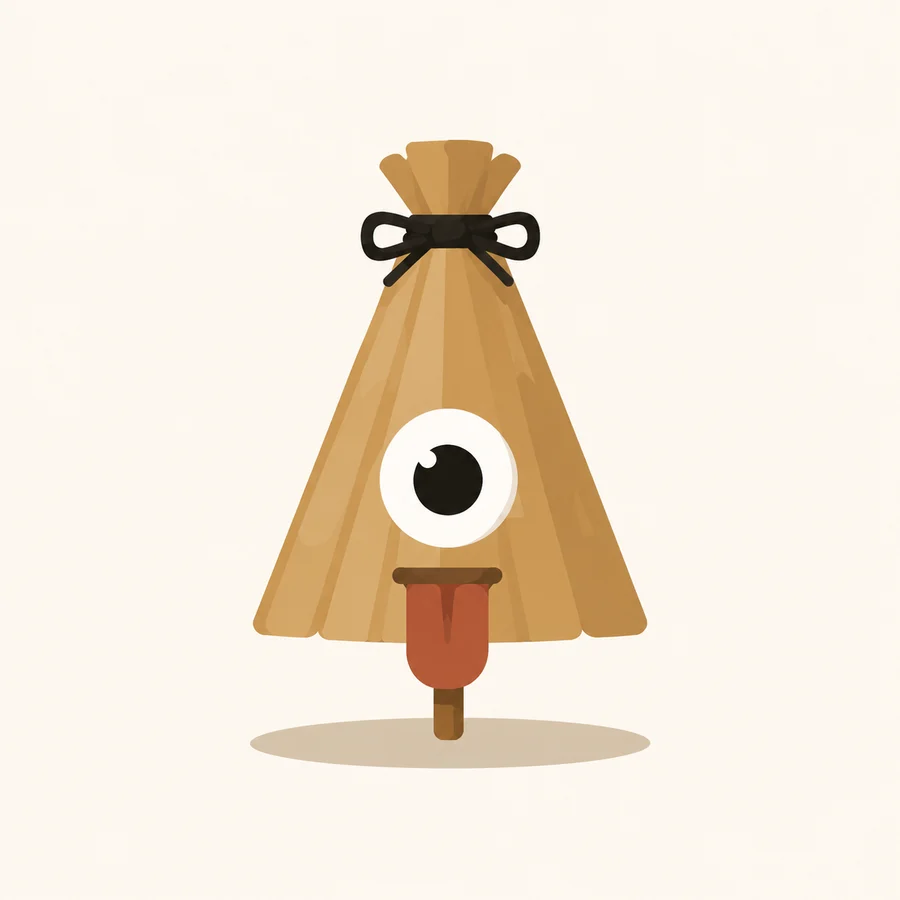
L'application 修行
Chaque écran de YokaiGo sert le même but : lire le japonais, et s'en souvenir.

Chaque monde enseigne un point précis : une ligne de kana, une particule, une forme verbale.
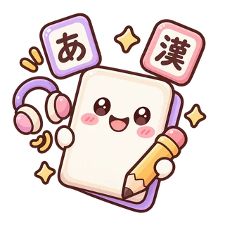
Des révisions basées sur un apprentissage optimal.
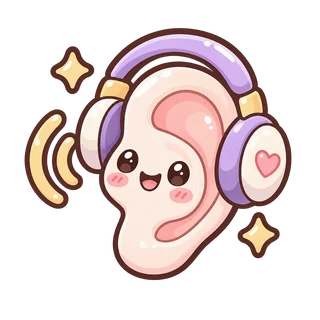
Apprenez et entraînez-vous en réussissant plusieurs exercices différents : compréhension orale, compréhension écrite, prononciation…
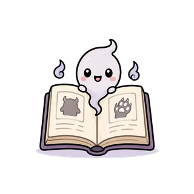
Chaque créature rencontrée rejoint le bestiaire avec sa fiche : à quoi elle ressemble, d'où vient son récit, et où on la croise.
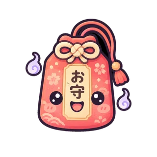
Achetez ou gagnez en récompense des omamori pour vous aider dans votre aventure.
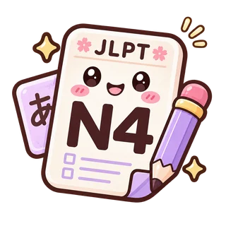
Dix sujets au format du JLPT N5, dix au format du N4, avec tous les exercices présents dans les vrais examens officiels.
Les créatures 妖怪
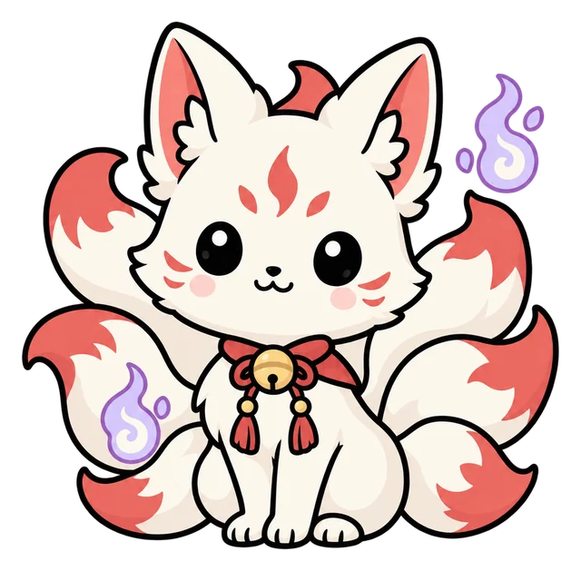
Au bord de l'eau, Kitsune garde la silhouette basse d'un renard au pelage crème pâle marqué de brun-gris, les oreilles dressées et la queue fournie. Son reflet sous la pleine lune souligne qu'aucun signe corporel unique ne trahit ses métamorphoses.
Vers 822, le moine Kyōkai (dates inconnues) raconte dans le Nihon ryōiki (Récits miraculeux du Japon) qu'une femme épouse un homme dans l'ancienne province de Mino, aujourd'hui le sud de la préfecture de Gifu. Poursuivie par un chien, elle reprend sa forme de renard, mais son mari lui demande de revenir dormir avec lui. Elle suit cette parole et revient chaque nuit ; c'est de là, écrit le récit, qu'elle reçut le nom de Kitsune, sur les syllabes ki-tsu-ne, « viens dormir ». Cette explication est celle du conteur du IXe siècle et vaut pour son histoire, non pour l'origine réelle du mot. Kitsune tient, d'un récit à l'autre, des rôles variables.
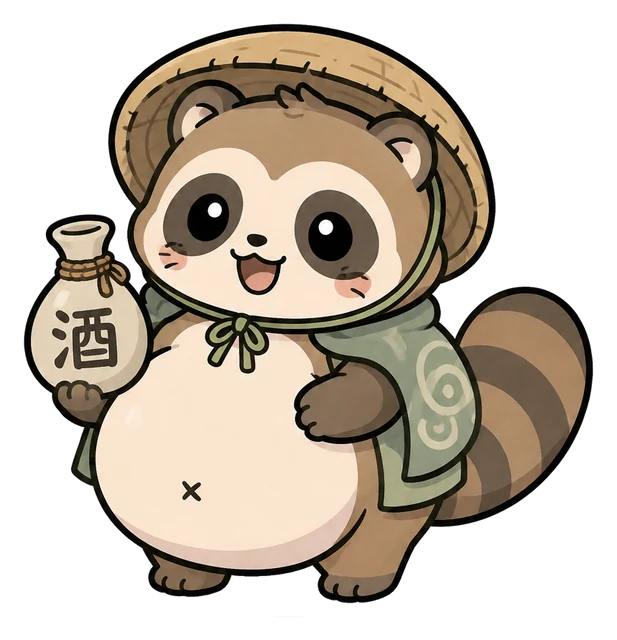
Tanuki se tient debout sur ses pattes de derrière contre une palissade de bambou, le ventre énorme et le pelage rendu par de fines hachures. Plus haut, la pleine lune pâlit derrière un nuage et une branche feuillue.
Tanuki nomme le chien viverrin, bête des forêts japonaises au corps trapu et au masque sombre sur les yeux, et la tradition lui prête de changer de forme. Le Honchō shokkan (Miroir des aliments du Japon), traité de diététique publié en 1697 par Hitomi Hitsudai (dates inconnues), lui attribue de se changer en autre chose, de battre son ventre comme un tambour et de porter un scrotum démesuré. Son nom s'écrit d'un signe qui désignait en Chine le chat sauvage et des bêtes de même sorte, et les lettrés japonais l'ont appliqué tour à tour au chien viverrin, au chat errant, au blaireau et à l'écureuil volant. Des récits de tanuki se rencontrent dans presque tout le pays, et ils abondent dans les îles de Sado, d'Awaji et de Shikoku.
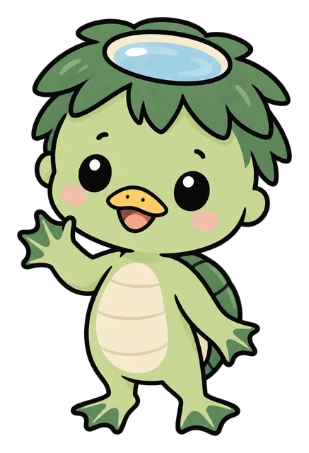
Le kappa, « enfant de rivière », porte sur le crâne un creux plein d'eau, et garde sa force tant que cette eau y reste. Il a une carapace, un bec pointu, les mains et les pieds palmés, et la taille d'un enfant de quatre ou cinq ans.
Le mot kappa contracte kawa, la rivière, et warawa, l'enfant. Cette créature des rivières change de nom selon les régions : kawatarō dans l'ouest du Japon, medochi dans le nord du Tōhoku, la région du nord-est du Japon. On prête au kappa de tirer les baigneurs au fond pour leur arracher le shirikodama, organe imaginaire logé dans l'anus, d'entraîner les chevaux dans l'eau et de provoquer les passants à la lutte ; on lui donne aussi le goût des concombres. Le bras qu'un homme lui arrache, il le récupère, dit-on, contre une lettre d'excuse, un service rendu ou la recette d'un remède. Le folkloriste Yanagita Kunio (1875-1962) voit dans le kappa une divinité de l'eau déchue.
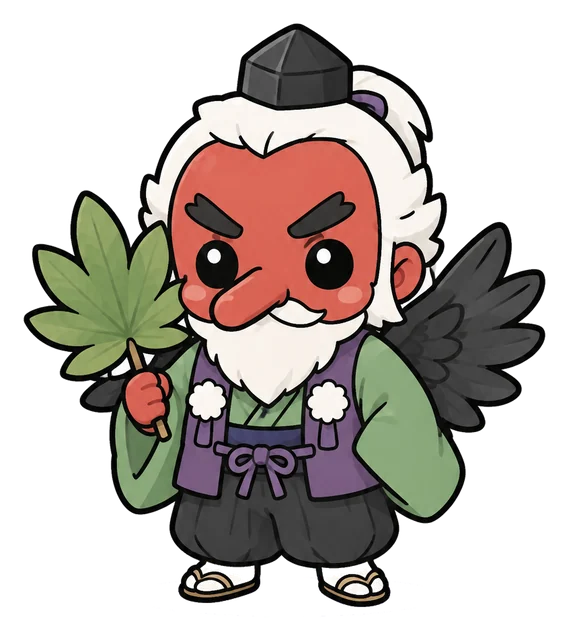
Le tengu habite les montagnes profondes. Il a le visage rouge, un nez très long et de grandes ailes. Il porte l'habit des ascètes des montagnes et tient un éventail de plumes. Sous une autre forme, il a une tête de corbeau et un bec.
Le nom vient de Chine : ses caractères, « chien céleste », y désignaient une étoile filante annonçant un malheur. Ils entrent au Japon dans la chronique Nihon shoki (Chronique du Japon) : en 637, un astre traverse le ciel d'est en ouest dans un bruit de tonnerre, et le moine Min (mort en 653) voit dans cet astre non une étoile filante, mais le chien céleste, dont l'aboiement ressemble seulement au tonnerre. Le tengu devient ensuite un être des montagnes : le rouleau peint Tengu zōshi (Le livre des tengu), de 1296, montre des moines changés en êtres à bec, que leur orgueil fait tomber dans le tengudō, « la voie des tengu ».
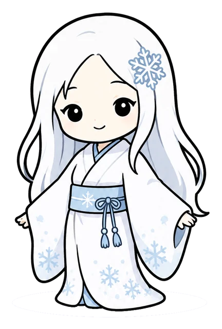
Yuki-onna, « la femme des neiges », est un esprit de la neige ou le fantôme d'une femme morte dans la neige, et paraît les nuits de neige, vêtue de blanc.
Yuki-onna vient de la tradition orale du Japon. Le plus ancien texte qui la nomme est le Sōgi shokoku monogatari (Récits des diverses provinces, par Sōgi), de 1685, attribué au poète Sōgi (1421-1502) : le livre raconte que Sōgi voit dans l'ancienne province d'Echigo, aujourd'hui la préfecture de Niigata sans l'île de Sado, une Yuki-onna haute d'environ trois mètres. L'écrivain Lafcadio Hearn (1850-1904) a publié en 1904 dans le recueil Kwaidan (Récits étranges) le récit le plus connu : Yuki-onna tue d'un souffle un bûcheron, épargne Minokichi et lui interdit de parler de cette nuit, puis revient sous le nom d'O-Yuki, épouse Minokichi et disparaît quand Minokichi parle. Le folkloriste Komatsu Kazuhiko (né en 1947) écrit que l'épisode du mariage vient du récit de Hearn.
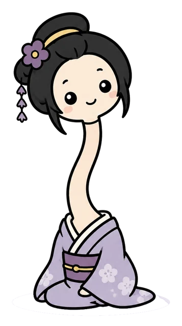
Rokurokubi est une femme d'aspect ordinaire tant qu'elle est éveillée. Pendant son sommeil, le cou de Rokurokubi s'allonge et porte la tête au-dessus du corps couché.
Rokurokubi paraît dans les récits et les essais écrits de l'époque d'Edo (1603-1868). Sous l'ère Bunka (1804-1818), les récits en vogue font de Rokurokubi une courtisane : couchée près d'un client endormi, elle allonge le cou et lèche l'huile de la lampe. Le Kasshi yawa, recueil du seigneur Matsura Seizan (1760-1841), rapporte qu'un maître, soupçonnant sa servante d'être une Rokurokubi, la regarde dormir : une vapeur monte de la poitrine de la servante, dont le cou s'allonge ; le maître la renvoie. À Ibaraki, ville de la préfecture d'Ōsaka, une tradition relevée en 1933 raconte qu'au début de l'ère Meiji (1868-1912) un marchand et sa femme voient chaque nuit le cou de leur fille s'allonger ; la chose se sait et la famille quitte la ville.
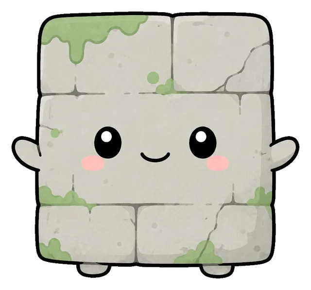
Nurikabe barre le chemin d'un mur que le marcheur ne peut contourner. L'auteur de bande dessinée Mizuki Shigeru (1922-2015) le dessine à partir des années 1960 en mur rectangulaire, avec deux petits yeux, deux bras courts et deux pieds.
Nurikabe est craint sur la côte du district d'Onga, dans l'ancienne province de Chikuzen, aujourd'hui le nord-ouest de la préfecture de Fukuoka. Le folkloriste Yanagita Kunio (1875-1962) recueille cette croyance en 1938 dans le Yōkai meii (Répertoire des noms de créatures étranges) : celui qui marche de nuit voit le chemin se changer tout à coup en mur, et ne peut plus aller nulle part. Un bâton passé sur le bas du mur fait disparaître Nurikabe ; les coups portés plus haut ne donnent rien.
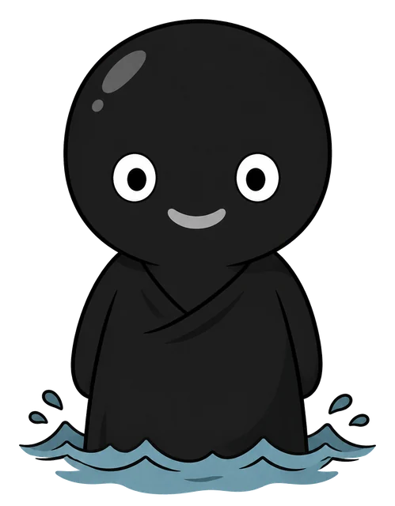
Entièrement noir et chauve, l'Umibōzu ne montre au-dessus des vagues que sa tête et ses épaules. Une estampe ne lui laisse pour tout visage que deux yeux en croissant blanc, sans nez ni bouche.
L'Umibōzu paraît de nuit, le plus souvent sur une mer calme ; le plus ancien récit, le Kii zōdanshū (Recueil de propos étranges et divers), anonyme, 1687, le montre au contraire dans la tempête et l'appelle kuronyūdō, le moine noir : au large du cap Irago paraît une tête cinq ou six fois celle d'un homme, à la gueule de soixante centimètres — les textes, eux, lui donnent une bouche. Ses autres noms, umibōzu, umihōshi et uminyūdō, le disent moine ; bōzu est un religieux bouddhiste au crâne rasé. Un livre de 1851 le fait parler, et à Kuwana, dans la préfecture de Mie, on raconte que la créature demande au marin Tokuzō : « Est-ce que je te fais peur ? » Le marin répond que rien n'est plus effrayant que de gagner sa vie. L'Umibōzu disparaît alors.
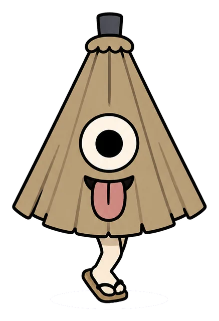
Kasa-obake n'est qu'une ombrelle presque refermée, un cône noir et étroit. Un grand œil s'y ouvre, une langue rouge sort de la jointure du papier, deux bras pâles se coudent de chaque côté, et une seule jambe le porte.
Kasa-obake, Karakasa-kozō, Ippon-ashi : ce type porte plusieurs noms, et l'image l'atteste avant les textes. Une case du Mukashibanashi bakemono sugoroku (Le jeu de parcours des créatures des contes d'autrefois), plateau de jeu imprimé que le peintre Utagawa Yoshikazu (dates inconnues) a dessiné en 1858, montre un grand œil, une langue et une seule jambe sous le titre « l'unijambiste de Sagi-buchi », sans employer le nom de Kasa-obake. Le Sasayaki senri shingo (Mille lieues de nouveaux chuchotements), recueil de 1762, range un parapluie parmi sept créatures rattachées au temple Kōfuku-ji, dans la préfecture de Nara, mais n'en décrit aucune. Aucun texte ancien ne fait de ce parapluie un objet de cent ans devenu créature.
Vos données
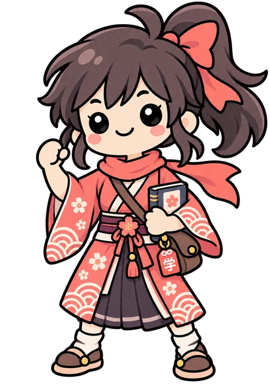
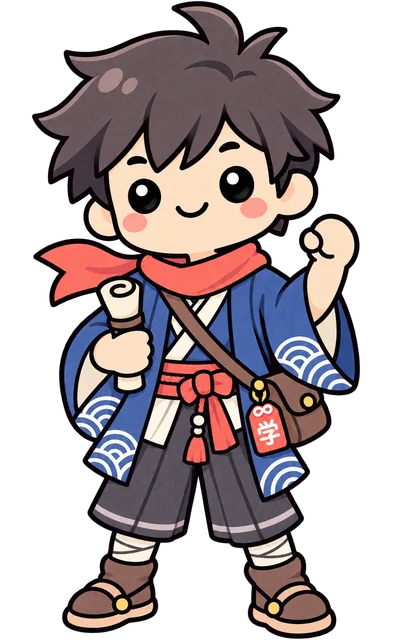
Le studio
Un petit studio indépendant français amoureux du Japon.
Une question, une erreur dans un cours, un mot mal traduit : écrivez à
Les signalements envoyés depuis l'application arrivent à la même adresse.